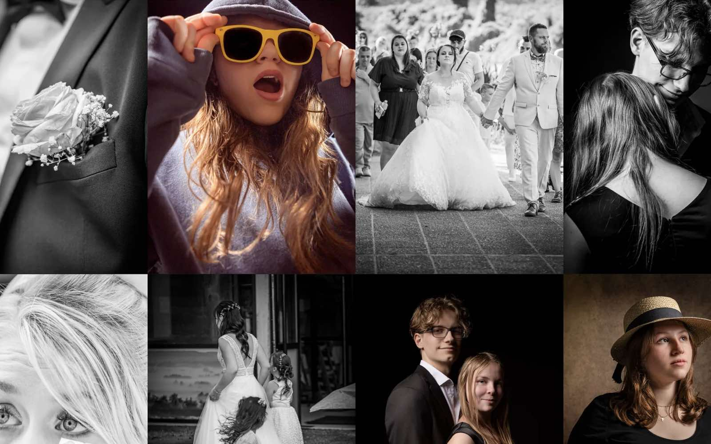

Dugos Photographie
Refonte du site vitrine de Dugos Photographie, photographe de mariage et de portrait à Marmande. Seul, de la conception à la mise en ligne.
Voir le siteLe projet
Une refonte. Laurent est photographe de mariage et de portrait à Marmande. J'ai refait son site seul, de A à Z : conception, design, développement et mise en ligne. La refonte devait mettre son travail en avant, rassurer les futurs clients et générer des demandes de contact.
Les images d'abord. J'ai mis la direction en retrait derrière les images : mosaïque en page d'accueil, dominante noir et blanc, typographie à empattements, interface discrète. Le portfolio est rangé en deux galeries, Mariages et Portraits, consultables en grille ou en défilement horizontal. Les avis Google servent de preuve sociale, et le formulaire de contact qualifie la demande par type de prestation.
Le portfolio est rangé en deux galeries, Mariages et Portraits.